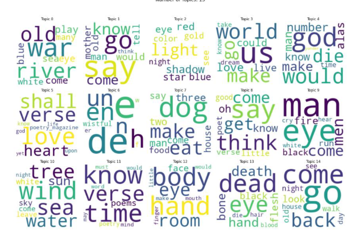
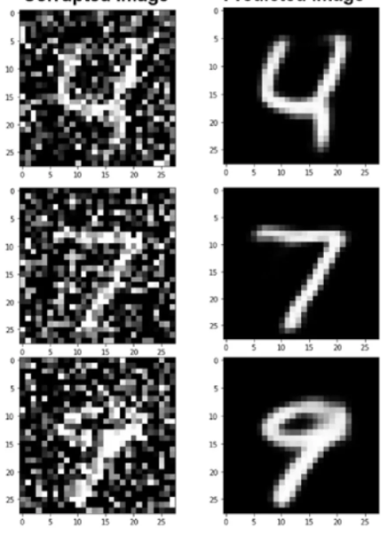

Data Science Portfolio
Hi, I am Daniel and here are some of the Data Science projects I have developed.
About me

Web Scrapping and NLP for topic modeling and poem classification
Poem are obtained by web scrapping and then, obtain the topics and classified in a period based on the text.
By Daniel, on 2024

Denoising autoencoder
An autoencoder that is able to clean the noise of some images.
By Daniel, on 2024